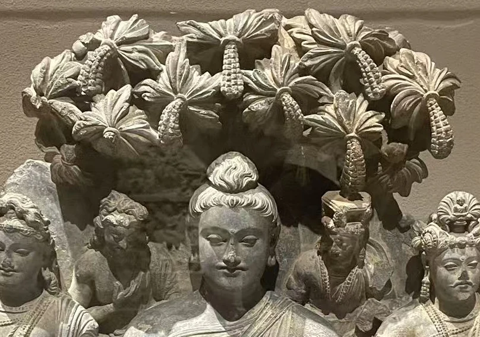
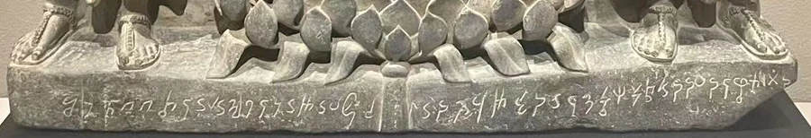
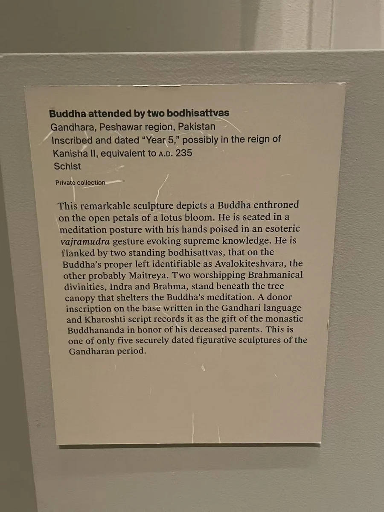
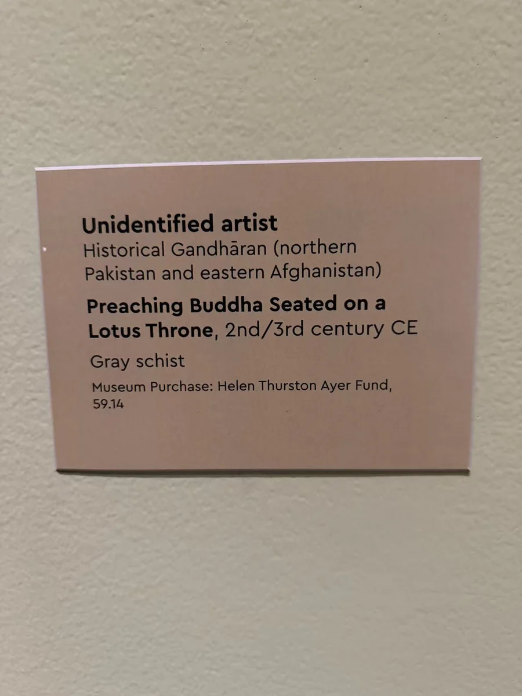

07 / 佛与菩萨的形象
Year 5：一条铭文与一场说法
树冠下的三尊，与为父母发愿的一行铭文。

图片各自缩放，非实物等比例；尺寸见作品资料。
树冠压得很低，几乎把主尊与两侧菩萨围成一间小小的佛堂。中央佛坐在莲台上，双手停在胸前；左右胁侍以衣褶和珠饰回应主像，肩旁还有体量较小的人物。莲瓣、脚下的基座和繁密的叶片构成上下两端，视线在其中来回，最后落到台座边沿那一行细小文字。
树冠下的肩旁人物


这行佉卢文使作品有了“五年”佛三尊的通称。2023年铭文研究将供养者读为 Budhanada，并指出造像与纪念亡故父母有关；对“五年”的纪元换算，作者结合风格倾向232年。现场展签则写235年。两种年代记录分别保留在作品资料中；原来的出土地点仍不明确。 [1]
台座上的一行字
这张局部显示铭文的位置、走向及其与莲茎的关系；原图清晰度不足以支持逐字校读。上文姓名与发愿内容据2023年铭文研究。 [1]


它属于私人收藏，照片记录的是在大都会的展出。树下的层层人物如何组织说法场景，可以与波特兰的莲座说法佛并看：一件以树冠收拢人物，一件使主尊与莲座的关系更突出。这里最值得慢看的，是大与小、中央与两侧如何协调；基座的文字又把庄严的形象接回一位曾经为父母发愿的人。
相互参看

本篇作品
“五年”纪年佛三尊 · 私人收藏 · 在大都会艺术博物馆展出
- 原题名
- Schist Buddha Triad (Year 5)
- 年代
- 3世纪；展签作235年，研究倾向232年
- 材料
- 片岩
- 尺寸
- 61.6 × 59.1厘米
- 收藏／展出
- 私人收藏 · 在大都会艺术博物馆展出
- 地域关系
- 犍陀罗地区；具体原址未详
现场展签作235年；2023年铭文研究将“五年”与贵霜纪年及风格比较结合，倾向232年。原出土地不详。
莲座说法佛 · 59.14
- 原题名
- Preaching Buddha Seated on a Lotus Throne
- 年代
- 2—3世纪
- 材料
- 灰片岩
- 编号
- 59.14
- 收藏／展出
- 波特兰艺术博物馆
- 地域关系
- 犍陀罗地区；具体原址未详
题名、年代、材料与59.14据现场展签；尚未取得可直接核对的现行馆藏网页。
资料与来源
现场展签



